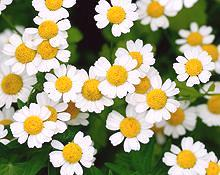
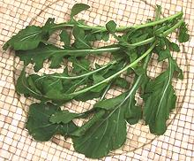
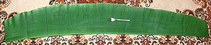
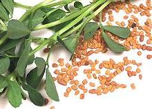
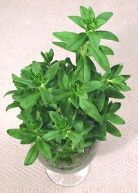
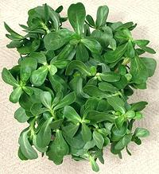
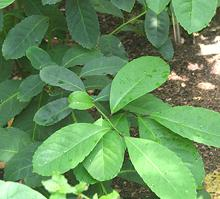

SAFARI
Users
- Major Herb Families
- Southeast Asian Herbs
- Other Varieties - Alphabetic Order
- Buying, Storing & Cooking with Herbs
- Links - to other herb sites
Most of the culinary herbs belong to one of just a few major families, like Mints and Parsleys. Here we have links to pages for those major families. Below this section will be found those from minor families, or major families that include few herbs - and a few unusual ones you might not think to look for in the major families.
Mint Family
- [family Lamiaceae of order Lamiales]The Mint family is a large and diverse family of aromatic herbs, shrubs and trees. The herbs in particular are important in culinary and medicinal use. It does, however, provide little in the way of fruit or vegetables. This family has its own Mint Family page detailing its members. Important members of the family include:
| Basil | Perilla | Savory |
| Mint | Rosemary | Thyme |
| Oregano | Marjoram | Sage |
| Teak | Za'atar | Many More |
Basils
- [genus Ocimum of family Lamiaceae]A genus within the Mint family (Lamiaceae), there are so many important basils they have their own Basil Page detailing its members. Important members of the genus include:
| Italian Basil | Thai Purple Basil |
| Purple Basil | Thai Lemon Basil |
| African Basils | Holy Basil |
| Besobela | Basil Seeds |
Lamiales
-(other than Mints and Basils)
- [Order Lamiales]While the mints and basils are the Lamiales most widely used as herbs, there are other herbs in the order, and some plants very important for their fruits and seeds used as flavorings. Order Lamailes has its own page detailing its members. Important members of the order include:
| Verbinas | Mexican Oregano | Koseret |
| Sesame | Olives |
Parsleys & Aralias
- [family Apiaceae (formerly Umbelliferae)]
The Parsleys are a large family of aromatic herbs many of which also provide fruits for spices and roots or stalks as aromatic vegetables. This family has its own Parsley Page detailing its members. Important members of the family include:
| Cilantro | Fennel | Pennywort |
| Coriander | Lovage | Culantro |
| Parsley | Celery | Dill |
| Chervil | Angelica | Gensing |
Daisy Family
- [family Asteraceaed alt Compositae]
While the Dasies are a huge family (23,000 species) only a few species are of culinary use, but a number of these are herbs. This family has several pages of its own, including one for Daisy Family - Herbs. Important members of the family include:
| Calendula | Marigold | Chamomile |
| Pineapple Weed | Stevia | Tarragon |
| Mexican Tarragon | Wormwood |
Mustard Family
- [Family Brassicaceae (formerly Cruciferae)]
The huge Cabbage / Mustard family is best known for the leafy and root vegetables that got humans through the winter in earlier times, but this family also produces some popular herbs and flowers. This family has its's own Mustard Family - Herbs page. Important members of the family include:
| Arugula / Rocket | Persian Broadleaf Cress |
| Watercress | Garden Cress |
| Pepper Cress | Nasturtium |
Banana Leaf
- [Musa acuminata, Musa paradisiaca (plantain)]
Bananas are the largest of the herbs, up to 40 feet tall. Their
leaves are used in many tropical cultures as a flavoring wrapper for
steamed and baked foods. The photo shows a typical half leaf (split down
the spine) 6 feet long by 10 inches wide. Banana plants grow all over
Southern California as tropical decoratives, but are generally not
suitable as wrappers because the leaves have been split up by the Santa
Ana winds.
Details and Cooking.
Beletientien / Atama
[Bush Apple; Beletientien, Atama (Nigeria); Obeletientien, Beletete; Heinsia crinita]
A shrub or small tree native to Tropical Africa. It is most use in Nigeria,
where the leaves are considered essential for Banga Soup. The fruit is also
eaten.
Details and Cooking.
Photo by Scamperdale distributed under license
Creative Commons
Attribution-NonCommercial 2.0 Generic.
Camellia
- [Tea, Cha, Chai, Camellia sinensis (Camellia family)]
This Southeast Asian camellia, source of the green, white, black and
oolong teas of commerce, is closely related to camellias grown as
decoratives. In fact, when European traders tried to buy tea plants in
China, the Chinese, not realizing tea couldn't grow in Europe, substituted
decorative camellia plants useless for tea. The Europeans, realizing they'd
been tricked, grew the plants in controlled greenhouses and developed fancier
decoratives, some of which were sold back to Chinese flower fanciers at
premium prices. Photo by
Axel Boldt
contributed to the public domain.
Curry Leaf
- [Chalcas koenigii (Citrus family)]
This member of the citrus family produces aromatic leaves much used in
India, particularly southern and central India and Sri Lanka
and essential to authenticity in those cuisines. There is no known
substitute so if you don't have them you just have to leave them out. They
have an aromatic and slightly camphorous taste and are generally used in
small quantity, fried in oil with the cumin or mustard seeds before adding
the onions or other main ingredients.
Details & Cooking
Epazote
- [Stink Weed, Jesuit tea, Chenopodium ambrosioides (Goosefoot family)]A common weed in southern Mexico, Central and South America, Epazota is now grown in the warmer parts of North America and sometimes becomes an invasive weed here. Its main culinary use is for flavoring black beans and to a lesser extent other recipes from southern Mexico and Central America. It is reputed to prevent flatulence from eating beans and to relieve a number of medical conditions. An oil extracted from the seeds kills intestinal worms and is also an antispasmodic and abortifacient.
The smell of epazote is quite strong but extremely difficult to
describe. Leading spice expert Gernot Katzer says it smells to him like
epazote.
Details and Cooking.
Fenugreek
- [Methi (Hindi, Urdu, etc.); Shanbalileh (Persia); Hilbeh (Arabic); Utakbo suneli (Georgia); Trigonella foenum-graecum, also Trigonella cerulea]
This plant, a bean related to clover, has apparently been cultivated for over 6000 years in the Middle East, and was also well known to the ancient Greeks and Egyptians. Both seeds and greens are used.
In India, fenugreek seed is toasted and included in a number of important masalas (spice mixes), and it is also used in the cuisines of the Middle East, Persia and Greece. The fresh green leaves and stems are used as an herb in these same regions, and dried leaves in Georgia and India.
Fenugreek seed is also considered an important medicinal, particularly
for increasing lactation in nursing women.
Details and Cooking.
Miner's Lettuce
- [Winter Purslane, Spring Beauty, Indian lettuce; Claytonia perfoliata]This herb, native to the western mountain and coastal regions of North and Central America, is the only member of the purslane family (Portulacaceae) other than Common Purslane used for food in North America and Europe. It is also now fairly widespread in Western Europe.
Named for the California Gold Rush miners who ate it to prevent scurvy,
miner's lettuce can be used raw in salads or cooked like spinach which it
somewhat resembles in taste. The photo shows round form of leaf with a
flower dot at the center which will grow into a stem with a bunch of
flowers at the tip. The normal leaves are heart or spade shaped - all
those other leaves belong to other weeds. This herb does best in moist
shady locations.
Photo by
Antandrus -
contributed to the Public Domain.
Ngo Om
- [Ngo Om, Ba Om, Rau Om (Viet); Phak Kayang (Thailand); Tian Xiang Cao, Zi Su Cao (China); Soyop-pul (Korea); Shiso-kusa (Japan); Limnophila aromatica of family Plantaginaceae (Plantains)]
This aquatic herb is native throughout Southeast Asia, extending into
southern China, Japan and Australia. After the Vietnam war, it was
brought to North America by refugees, and is now easily available in
the Asian markets here in Southern California. This plant grows well
in still water, such as found in rice paddies. It's particularly popular
in Vietnam, but is also used in China and Japan. In Chinese, Japanese
and Korean, the name of this herb is the same as for
Perilla, a very distantly related herb. It
is made specific with a suffix meaning green leafy plant (see names
above).
Details and Cooking.
Purslane
- [Verdolagas (Mexico); Sanhti, Punarva (India); Pigweed, Little Hogweed, Portulaca oleracea]
This succulent weed common in California vineyards is actually native to India and the Near East. It was extensively used in ancient Greece and still appears in Mediterranean cuisines. There is evidence it had already migrated to the New World well before Columbus. The only other member of the Purslane family (Portulacaceae) used as food in North America and Europe is Miner's Lettuce, also known as "Winter Purslane".
Purslane is used raw in salads, as a cooked green similar in taste to spinach. It is also used in soups where it's slightly mucilaginous nature acts as a thickener. It can be found in markets serving a Mexican community.
Purslane is unusually high in Omega-3 fatty acids and is also a source
of vitamin C and dietary minerals. It also contains powerful antioxidants
which may have anti-cancer properties. In India it is used as a liver
tonic. Detail and Cooking.
Rau Dang
- [(Viet), Foo Yip (Cantonese), Glinus oppositifolius]
This strong flavored somewhat bitter herb does not yet have a
common English name, but is popular for certain fish soups and stews in
Vietnam. Elsewhere it's use is mainly medicinal. A related herb,
G. lotoides, also native to Africa and Southeast Asia has
recently been found as an invasive weed in California as well as
Louisiana and other southern states.
Photo borrowed from
Can Tho University, Vietnam.
Rocket
- see Arugula.Rue
- [Ruta graveolens Citrus family)]
An intensely bitter herb, rue has faded from the culinary scene except in
Ethiopia. Once widely used in the Mediterranean region and an important herb
during the Roman Empire, it is still occasionally called for in traditional
recipes and also appears as a flavoring in some distilled beverages. The
leaves are always be used fresh, so you will need it in your garden if you
wish to use it. Dried fruits are also used in Ethiopia. A common decorative,
it can be found in the herb section of most well stocked nurseries and is easy
to grow in temperate climates. The blue-green leaves are very small, about 3/8
inch long.
Detail and Cooking.
Yerba Maté
 [Yerba mate (Spanish); Erva mate (Portuguese); Ilex paraguariensis (Holly family)]
An herb native to northern Paraguay and southern Brazil, now widely
cultivated for making Maté a caffinated herbal tea. Teas made from
this herb are very popular in Paraguay, Uruguay, southern Brazil, northern
Argentina, and southern Chile, as well as Syria and Lebanon. For details
see our Yerba Mate page.